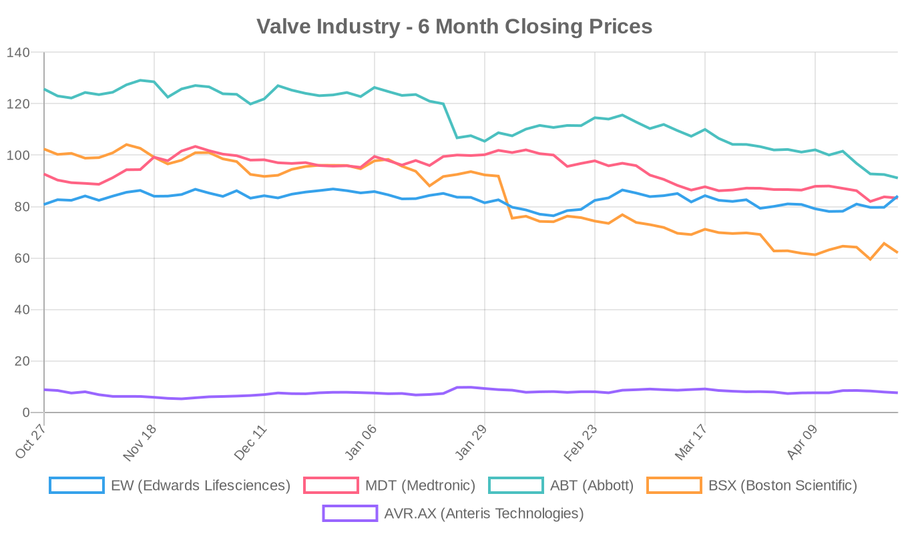
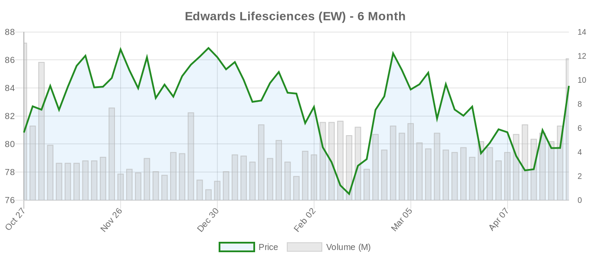
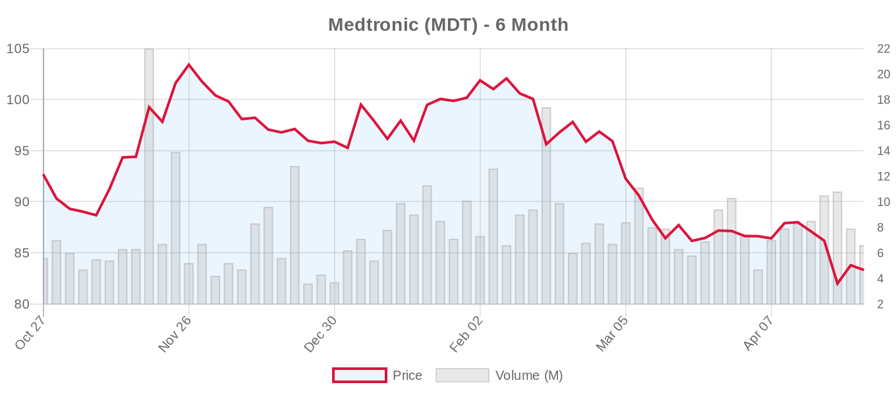
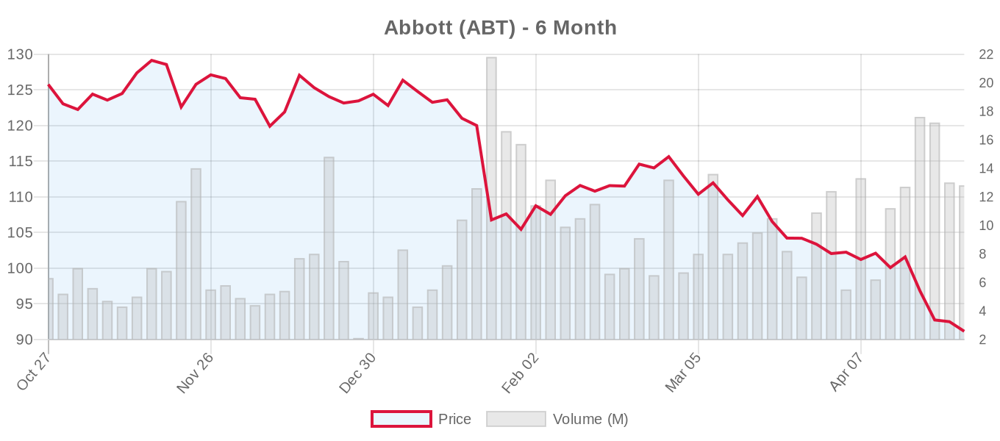
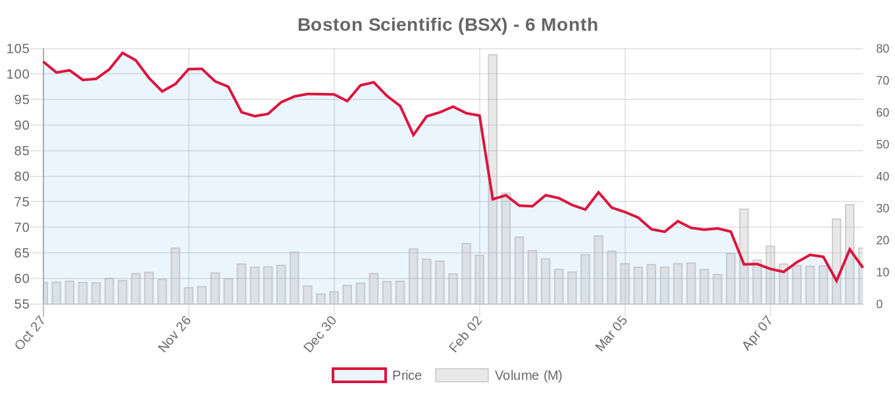
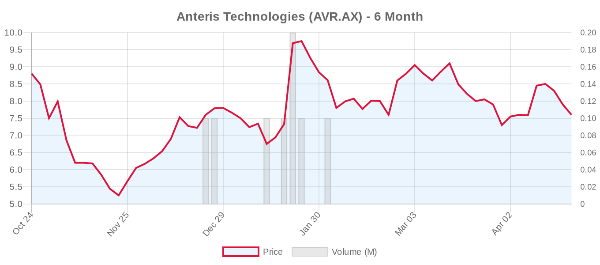

|
||||||||
|
Week of April 19 - April 25, 2026 By E. Nolan Beckett |
||||||||
|
||||||||
Week in ReviewThis was arguably the most consequential week for structural heart disease in 2026 so far. Edwards Lifesciences delivered a blockbuster Q1 — beating earnings estimates, posting 12.7% revenue growth to $1.65 billion, and raising full-year guidance — validating the thesis that TAVR volumes remain robust and transcatheter mitral/tricuspid therapies are transitioning from R&D to revenue. But the clinical literature offered essential counterweights to the commercial enthusiasm. A meta-analysis of over 13,000 patients confirmed that transcatheter edge-to-edge repair should not replace surgery for primary mitral regurgitation, with 82% higher one-year mortality and dramatically inferior MR reduction compared to surgical repair. The Tricuspid Valve Academic Research Consortium published its second consensus document (TVARC-2) in JACC, establishing the standardized framework for designing future tricuspid valve trials — critical infrastructure as this rapidly evolving space matures. A CENTER2 analysis of nearly 25,000 TAVI patients quantified the substantial mortality burden of both pre-existing and new-onset atrial fibrillation after TAVR. And the cardiology world mourned Eugene Braunwald, the founding father of modern cardiology, who died at age 96. For patients and families: transcatheter heart valve therapies continue to grow and improve, but surgery remains the better choice for many valve conditions — especially in younger patients and those with primary mitral disease. The conversation with your Heart Team matters more than ever. Top Stories This Week[NOTABLE] Edwards Lifesciences Q1 2026: TAVR Surge Sends Revenue Past Estimates, Guidance RaisedEdwards Lifesciences reported Q1 2026 results that exceeded Wall Street expectations across the board: revenue of $1.65 billion (up 12.7% year-over-year), adjusted EPS of $0.78 versus the $0.73 consensus estimate, and raised full-year 2026 sales and adjusted EPS guidance. Both the TAVR franchise and the Transcatheter Mitral and Tricuspid Therapies (TMTT) segment — encompassing PASCAL and EVOQUE — were cited as growth contributors. Management announced a $500 million accelerated share buyback program. Analyst reactions were broadly positive: Barclays raised its target to $110, Goldman Sachs to $98, Truist and Evercore ISI also increased targets, while Canaccord was the lone contrarian, cutting its target on valuation concerns. Editorial perspective: These results validate the near-term structural heart growth thesis. The ESC 2025 guidelines' expansion of TAVI indications to patients ≥70 with tricuspid aortic valves, the Class I upgrade for TEER in ventricular secondary MR, and the Class IIa recommendation for transcatheter tricuspid therapy collectively enlarge the addressable market. But Edwards' trailing P/E of 46x prices in substantial future growth. The critical questions remain whether TMTT can scale commercially at pace, and whether TAVR volume growth can be sustained as the field moves into younger, lower-risk populations where durability data beyond 10 years are absent and long-term pacemaker consequences remain poorly understood. The ACC/AHA guidelines have not yet followed the ESC on several key expansions — if the next U.S. update is more conservative, European growth alone may not sustain the current growth trajectory. [NOTABLE] TEER vs. Surgery for Primary MR: Meta-Analysis of 13,000 Patients Firmly Favors SurgeryKurmasha et al. published a systematic review and meta-analysis with trial sequential analysis in the Journal of Cardiac Surgery, comparing transcatheter edge-to-edge repair (TEER) with surgical mitral valve repair or replacement for degenerative (primary) MR across eight studies encompassing 13,308 patients. The findings are unequivocal in direction: TEER was associated with 82% higher one-year mortality (RR 1.82, 95% CI 1.04–3.19), 4.5-fold higher reintervention rates at ≥1 year (RR 4.52), and dramatically inferior MR reduction. TEER did show advantages in lower new-onset AF, less blood transfusion, shorter hospital stays, and less AKI. Thirty-day mortality, stroke, and HF rehospitalization did not differ. Editorial perspective: This meta-analysis arrives at a critical juncture. Both the ACC/AHA 2020 and ESC 2025 guidelines are clear: surgical repair is the gold standard for primary MR in operable patients (Class I). TEER is reserved for high-surgical-risk patients (Class IIa). This study reinforces that hierarchy with the largest pooled dataset to date. However, the included studies mix RCTs with observational cohorts — TEER patients were likely older and sicker, and even propensity matching cannot fully account for unmeasured confounders. The only RCT (EVEREST II) used first-generation MitraClip technology over a decade ago. The REPAIR-MR trial (MitraClip vs. surgery for primary MR, n=500, active/not recruiting) will provide the definitive modern answer. Until then: for primary MR, surgery remains king. [NOTABLE] TVARC-2: A Blueprint for the Next Generation of Tricuspid Valve TrialsDavidson, Hahn, Mehaffey, Cohen, Pinney et al. published the second Tricuspid Valve Academic Research Consortium (TVARC-2) consensus document in JACC. Building on TVARC-1's disease classification framework, this document establishes standardized trial design principles and endpoint definitions for comparing transcatheter tricuspid valve interventions with surgery and medical therapy. The tricuspid space has evolved from a therapeutic orphan to an arena with multiple FDA-approved devices (TriClip, EVOQUE) — but TRILUMINATE Pivotal, Tri.Fr, and TRISCEND II used different primary endpoints, TR grading systems, and comparator arms, making cross-trial comparison difficult. TVARC-2 provides the scaffolding for rigorous, comparable head-to-head studies. Editorial perspective: The inclusion of James Mehaffey — a surgeon who has written critically about therapies outpacing evidence — among the authors signals a serious attempt at balanced trial architecture. The ESC 2025 guidelines gave transcatheter TR treatment a Class IIa recommendation (LOE A), but the "A" designation rests on a limited number of trials with short follow-up. TVARC-2's standardization framework is essential for generating the next wave of evidence that will either solidify or revise that recommendation. The document also implicitly acknowledges that the fundamental question — repair versus replacement for tricuspid regurgitation — remains unanswered, and that the appropriate surgical comparator must be defined. [NOTABLE] Atrial Fibrillation After TAVI: CENTER2 Analysis of 23,320 Patients Quantifies the RiskHemelrijk et al. presented a CENTER2 pooled analysis of 23,320 patients from 10 international studies (2007–2022) evaluating the impact of AF on TAVI outcomes. Pre-existing AF (28.2% prevalence) was independently associated with 39% higher mortality (aHR 1.39). New-onset AF (6.2% incidence) carried an even stronger mortality signal (aHR 1.75), along with higher 1-year stroke (6.1% vs. 3.4%) and doubled major bleeding (12.0% vs. 6.7%). This is the largest real-world cohort to date examining AF in the TAVI population. Editorial perspective: These findings are clinically actionable. The 6.2% new-onset AF rate with its striking mortality and stroke associations raises the question of whether post-TAVI rhythm monitoring should be more systematic. A Shanghai East Hospital trial (NCT07519161) comparing metoprolol versus amiodarone for post-TAVI AF prevention is directly relevant but has not yet begun recruiting. Whether aggressive AF prevention or early rhythm control post-TAVI would improve outcomes remains untested. The observational design limits causal inference — AF patients carry greater comorbidity — but the magnitude of the association demands attention. In Memoriam: Eugene Braunwald (1929–2026)TCTMD reported that Eugene Braunwald, widely regarded as the father of modern cardiology, died at age 96. Braunwald's contributions span the entire arc of contemporary cardiovascular medicine — from foundational heart failure pathophysiology and the TIMI trials to his transformative role in medical education through Braunwald's Heart Disease. His early work on the hemodynamics of mitral regurgitation and aortic stenosis laid the intellectual groundwork for the interventional era we now cover. The field has lost an irreplaceable giant. Aortic Valve (TAVR/TAVI)Evolut Low Risk: 5-Year Isolated Procedure AnalysisRamlawi et al. in the Annals of Thoracic Surgery presented a post hoc analysis of the Evolut Low Risk Trial restricted to patients who underwent isolated procedures (667 TAVR, 497 SAVR), excluding those with concomitant PCI, CABG, or crossovers. At 5 years, the composite of all-cause mortality or disabling stroke was virtually identical: 15.5% (TAVR) vs. 14.6% (SAVR, P=0.84). Cardiovascular mortality trended nonsignificantly lower with TAVR (6.9% vs. 8.3%, P=0.36), reintervention rates were comparable (3.0% vs. 2.2%, P=0.51), and moderate or greater paravalvular regurgitation was rare in both groups. However, the permanent pacemaker rate with self-expanding TAVR remained strikingly high: 27.3% vs. 8.9% for SAVR (P<0.001). Editorial note: This is a post hoc subgroup analysis — the original trial was powered for the full cohort. The 27.3% pacemaker rate is an Achilles' heel for the self-expanding platform, particularly in low-risk patients with decades of expected life. The long-term consequences of RV pacing — including pacing-induced cardiomyopathy — are well documented. Under ESC 2025 guidelines, many of these patients (≥70, tricuspid AV) would fall into the TAVI-preferred zone; under ACC/AHA 2020, the 65-80 range remains shared decision-making territory. Five-year follow-up is encouraging but does not address durability beyond the first half of a bioprosthetic valve's expected lifespan. Cerebral Embolic Protection Devices: Still No Stroke Benefit After TAVRGbreel et al. published a meta-analysis of 8 RCTs (11,589 patients) in Clinical Cardiology evaluating cerebral embolic protection devices (CEPDs) during TAVI. Results: no significant difference in overall stroke (RR 0.92, 95% CI 0.75–1.14), no difference in disabling or non-disabling stroke, and no mortality benefit. Trial sequential analysis explicitly states that current evidence remains insufficient to definitively confirm or refute CEPD efficacy. A transient improvement in cognitive testing (MoCA scores) at 2-5 days disappeared at later follow-up. These findings challenge the face validity-driven adoption of CEPDs and demand that operators weigh the added cost and procedural complexity against this evidence gap. Bioprosthetic Valve Durability: A Stark Warning from Pediatric DataYokota et al. in Circulation: Cardiovascular Interventions reported on 180 pediatric AVR procedures (median age 14.3 years). Freedom from reintervention at 10 years was 29% for bioprosthetic valves versus 82% for mechanical valves (HR 4.66, P<0.001). While this is a pediatric population with accelerated structural valve deterioration, the implications extend to the broader TAVR durability debate. If bioprosthetic valves fail this dramatically in young patients, the question of what happens to TAVR valves in patients aged 50–70 over 15–20 years remains critical — a gap both ACC/AHA and ESC guidelines acknowledge by recommending SAVR for younger patients. TAVR-MET Trial: Tirzepatide and Post-TAVR Valve HealingThirugnanam et al. in Cardiovascular Revascularization Medicine reported the TAVR-MET trial, a prospective, randomized, open-label, multicenter study of 260 obese patients (BMI ≥30) undergoing transfemoral TAVR. Tirzepatide (a dual GIP/GLP-1 receptor agonist) initiated 4 weeks pre-TAVR and continued for 12 months reduced hypo-attenuated leaflet thickening (HALT; 8.4% vs. 21.6%, P=0.002) and ≥mild paravalvular leak (10.7% vs. 25.3%, P=0.006) at 6 months. A separate retrospective TriNetX database study of 3,416 TAVR patients with diabetes or obesity found GLP-1 RA use associated with dramatically lower MACE (HR 0.63), mortality (HR 0.61), and HF exacerbation (HR 0.38). Editorial note: The TAVR-MET concept is intellectually fascinating — metabolic modulation improving bioprosthetic valve healing. But the open-label design introduces bias, HALT is a surrogate marker of debated clinical significance, the 21.6% control HALT rate is unusually high, and 6-month follow-up is far too short to draw clinical conclusions. The GLP-1 RA database study's effect sizes are strikingly large — perhaps implausibly so for a retrospective analysis with inherent healthy-user bias. Both require prospective, blinded, event-driven confirmation before changing practice. Redo-TAVR Coronary Obstruction Risk: Index Valve Choice MattersLiccardo et al. published a post-TAVR CT study of 167 patients evaluating predicted coronary obstruction risk at redo-TAVR. In small annuli (≤430 mm²), self-expanding valves were associated with dramatically higher coronary obstruction risk compared to balloon-expandable valves (OR 15.52, P<0.001). This directly validates the ESC 2025 emphasis on lifetime management — the initial valve choice has downstream consequences for future reintervention feasibility. BAV-TAVI: Two New Datasets, Same LimitationsGorla et al. reported from the international AD-HOC registry on 980 BAV patients undergoing TAVI, with favorable short-term outcomes in young, low-risk patients deemed unsuitable for surgery. Separately, Magyari et al. reported a single-center Myval series (n=52 BAV patients) with comparable 1-year outcomes to trileaflet patients but a 34% pacemaker rate. Both add modestly to the BAV-TAVR evidence base but do not change the fundamental picture: BAV patients were excluded from virtually all TAVI RCTs, NOTION 2 showed a numerically higher event rate with TAVI in BAV (HR 3.8, P=0.07), and both ACC/AHA (Class IIb) and ESC (Class IIb) rate BAV-TAVI cautiously. SAVR remains preferred, especially in younger patients. Post-TAVI Readmissions: 10-Year Japanese DataNaito et al. analyzed 1,008 patients (mean age 85±5 years) from a single Japanese center and found all readmission types — heart failure (HR 5.54), infection (HR 5.00), stroke (HR 5.69), and fracture (HR 4.47) — carried significantly elevated mortality risk over 10 years. The finding that non-cardiac readmissions (fracture, infection) carry similar hazard to HF readmissions underscores that TAVI in octogenarians is not a one-time fix; the frailty trajectory continues. SAVER Study: Systematic Amyloidosis Screening Before TAVI/SAVRThe SAVER study (European Journal of Preventive Cardiology, n=1,001) applied a multi-organ symptom-based screening approach for cardiac amyloidosis in AS patients. The screen flagged 40% for further evaluation; ultimately 2% had confirmed CA. Key predictors: male sex (OR 23.8), carpal tunnel syndrome (OR 5.5), spinal stenosis (OR 4.1), sparkling myocardium (OR 4.8). AUC 0.88. This is clinically actionable: identifying CA before valve intervention can prevent futile procedures and redirect patients to disease-modifying therapies. Additional Aortic Valve Findings
Mitral Valve (Repair & Replacement)TEER vs. Surgery for Degenerative MR: Meta-Analysis DetailedThe Kurmasha et al. meta-analysis (discussed in Top Stories above) is the week's most important mitral publication. The full breakdown: 1-year mortality higher with TEER (RR 1.82); ≥2-year survival favored surgery (RR 0.72); reintervention 4.5× higher with TEER; MR grade 0 achieved in far fewer TEER patients (RR 0.20). TEER advantages included lower new-onset AF, less blood transfusion, fewer septicemia events, and shorter hospital stays. Both the REPAIR-MR trial (MitraClip vs. surgery, n=500) and PRIMATY trial (TEER vs. surgery for secondary MR, n=450) will provide the definitive modern answers. Concomitant AS Predicts Respiratory Failure After M-TEERSonbol et al. in Catheterization and Cardiovascular Interventions (n=238) found that concomitant mild-to-moderate AS independently predicted acute hypoxemic respiratory failure within 24 hours of TEER (16.7% vs. 3.8%, adjusted OR 4.38). The mechanism likely involves acute afterload increase as MR reduction unmasks fixed AS physiology. Practical implication: patients with coexistent AS undergoing TEER may need closer hemodynamic monitoring. TEER Complications: Leaflet Tears and Clip EmbolizationAmsalem et al. (Can J Cardiol) presented a case series on mitral leaflet tears following TEER — a recognized and feared complication. Separately, JACC Case Reports described retrieval of an embolized DragonFly TEER clip from a giant left atrium using a novel passive capture strategy. These reports underscore real-world procedural risks that can be underappreciated in trial-based enthusiasm. TEER Beyond Traditional Boundaries
TMVR: Large Annulus Equals Poor Outcomes — Are We Seeing Patients Too Late?Siki and Kaneko (Ann Thorac Surg editorial) raised the alarm about annular sizing challenges and late referral in transcatheter mitral valve replacement. The Intrepid TMVR Pivotal trial (Medtronic, n=1,056, recruiting) remains the key dataset. The ESC 2025 guidelines rate TMVI for degenerative MS with MAC at Class IIb, acknowledging the high-risk nature of all interventions in this population. Tricuspid Valve (Repair & Replacement)TVARC-2: Standardizing the Future of Tricuspid TrialsThe TVARC-2 publication in JACC (discussed in Top Stories above) is the most consequential tricuspid publication of the week. It establishes standardized trial design options for technology-vs-technology, technology-vs-surgery, and technology-vs-medical therapy comparisons across the tricuspid space. T-TEER vs. TTVR: First Real-World Comparative DataJelisejevas et al. (CJC Open) provided the first direct comparison from a single Canadian center (T-TEER n=14, TTVR n=29). Key findings: distinct patient phenotypes — T-TEER patients had lower GLIDE scores (better repair anatomy) while TTVR patients were sicker. Twelve-month mortality was 29% (T-TEER) vs. 34% (TTVR), with 37% HF readmission overall. These real-world mortality rates far exceed trial numbers (TRILUMINATE: 9.3% at 1 year; TRISCEND II: ~12% at 1 year), likely reflecting smaller sample, real-world patient selection, and possibly late referral. The sample is far too small for statistical comparison, but the finding that these represent different patient populations is clinically intuitive. ELASTA-T: Rescue Technique for Failed T-TEERAlvarez-Covarrubias et al. (EuroIntervention) from the German Heart Centre Munich described a standardized technique for electrosurgically detaching centrally-placed tricuspid clips that obstruct subsequent TTVR deployment, using principles borrowed from BASILICA/LAMPOON. Technically impressive but concerning: we are building bail-out strategies for therapies that received their first guideline endorsement only months ago. Surgical Bailout for Maldeployed Evoque TTVRJohnson et al. (JACC Case Reports) outlined technical considerations for emergent surgical conversion after a maldeployed Evoque transcatheter tricuspid valve. Key steps: securing delivery system at groin, establishing CPB without cardiac arrest, sequential rotational anchor release. Essential reading for programs building TTVR capabilities. Anatomy-Based Tricuspid Repair: The Surgical PerspectiveArai and Grau (EJCTS) published a comprehensive review unifying surgical tricuspid repair strategies — edge-to-edge repair, leaflet augmentation, papillary muscle relocation, annular repositioning — into a practical anatomical framework. The review explicitly notes these approaches "can rival evolving transcatheter options" — a reminder that surgical innovation continues in parallel. TRICENTO G2: New First-in-Human Tricuspid Replacement TrialA new first-in-human trial (NCT07536724) of the TRICENTO G2 transcatheter valve system was registered this week by Medira GmbH (10 patients). This adds another entrant to the increasingly crowded TTVR space alongside Edwards' EVOQUE and the TRICURE system from TRiCares. Surgical vs. Transcatheter ComparisonsWSJ: "A Breakthrough Heart Procedure Comes With Risky Tradeoffs"The Wall Street Journal published a feature on TAVR's tradeoffs — a piece aligning with concerns raised by Badhwar, Kaul, and others about therapies outpacing evidence. The timing is notable: it arrived the same day Edwards reported record TAVR growth. The tension between commercial momentum and clinical caution is the central narrative of structural heart disease in 2026. Unmeasured Confounders in Young TAVR PatientsHuang et al. (Ann Thorac Surg) highlighted interpretational pitfalls when comparing TAVR outcomes in younger adults. This signals continued surgical community concern about unmeasured confounding in non-randomized TAVR studies — particularly relevant as the ESC 2025 age threshold (70) and ACC/AHA threshold (65-80 shared decision zone) create a contested territory for patients aged 65-70. Edwards Intuity Explant: When Valve-in-Valve Isn't the AnswerMarsh et al. (J Cardiothorac Surg) reported the first US case of Edwards Intuity rapid deployment valve explantation with Rittenhouse-Manouguian annular enlargement. A 69-year-old woman with prior 23mm Intuity developed SVD at 7 years (mean gradient 60 mmHg). Valve-in-valve TAVR was rejected due to small valve size and relatively young age — precisely the lifetime management calculus the ESC 2025 guidelines describe. PCI in Frail TAVR Patients: Limited BenefitEMJ reported that PCI in TAVR patients shows limited benefit in the frail population — another reminder that patient selection drives outcomes more than procedural virtuosity. Clinical Trials UpdateAortic Valve Trials
Mitral Valve Trials — Repair
Mitral Valve Trials — Replacement
Tricuspid Valve Trials — Repair
Tricuspid Valve Trials — Replacement
Other Relevant Trials
Valve Industry Stocks — Weekly Performance Edwards Lifesciences (EW)
Edwards was the week's standout, surging 5.56% on Friday alone after reporting the Q1 beat. The stock has now recovered meaningfully from its Q1 lows and trades in the upper half of its 6-month range. Multiple analyst price target raises (Barclays $110, Goldman $98, Evercore ISI $93, Truist and BTIG also up) reflect confidence in the TAVR volume trajectory and TMTT commercialization. The forward P/E of 25x is reasonable by historical standards for a company with Edwards' structural heart growth profile, though the trailing P/E of 46.5x demands sustained execution. Key question for Q2: whether TMTT revenues inflect meaningfully as PASCAL/EVOQUE adoption scales and ESC 2025 guideline changes take hold in European practice. Medtronic (MDT)
Medtronic declined 3.3% this week and continues to trade near its 52-week low. The structural heart portfolio (Evolut TAVR, Intrepid TMVR) faces competitive headwinds from Edwards' strong results. The Evolut Low Risk 5-year isolated cohort data published this week showed equivalent mortality to SAVR but the persistent 27% pacemaker rate is a competitive liability versus SAPIEN. The Intrepid TMVR pivotal trial (NCT03242642, recruiting, n=1,056) represents Medtronic's most significant structural heart growth opportunity. At a forward P/E of 13.75x — the lowest among peers — MDT offers value if structural heart execution improves, but the diversified conglomerate discount is likely to persist. Earnings June 3. Abbott Laboratories (ABT)
Abbott had a difficult week, declining nearly 6% and touching a new 52-week low at $90.72. The sell-off is driven by ex-structural-heart headwinds (litigation, tariff exposure, diagnostics) rather than the valve business itself. The structural heart franchise — MitraClip (ESC 2025 Class I for ventricular SMR), TriClip (TRILUMINATE-based Class IIa for TR) — represents Abbott's highest-growth segment. The REPAIR-MR trial (NCT04198870, MitraClip vs. surgery for primary MR) remains the most anticipated structural heart readout. The MitraClip G5 registry (NCT07543874) will provide real-world next-gen data. At $91, Abbott trades at the very bottom of the analyst target range — either a deep-value opportunity or a sign of structural concerns analysts haven't fully incorporated. Boston Scientific (BSX)
Boston Scientific had a volatile week — surging nearly 9% on Wednesday after posting strong Q1 results ($5.2B net sales), then giving back gains with a 5.5% drop on Friday, ending the week down 3.4%. The CLASP II TR pivotal trial (NCT04097145, PASCAL for TR, n=870, recruiting) represents BSX's most significant structural heart catalyst. The 40% gap between current price and analyst consensus target ($87.06) is the widest in the group. The stock touched a new 52-week low of $59.39 during the week, reflecting macro headwinds that the "strong buy" consensus from 31 analysts suggests are overdone. Anteris Technologies (AVR.AX)
Anteris had a tough week, dropping over 10%, though ultra-thin trading volumes (4,254 shares on Friday) make price movements unreliable signals. The DurAVR THV pivotal trial (NCT07194265, randomizing against SAPIEN and Evolut, n=1,650) is the company's sole catalyst. The ADAPT anti-calcification technology theoretically addresses the durability question that looms over all bioprosthetic valves, but the trial results are likely years away. Note: JenaValve Technology (Trilogy THV for aortic regurgitation — ARTIST trial actively recruiting), J Valve Technology, and Meril Life Sciences (Myval THV, validated in the LANDMARK trial) are private companies with no public stock data available. Regulatory & PolicyNo new FDA actions, CMS reimbursement changes, or major policy announcements were identified this week specifically related to structural heart valves. The regulatory landscape remains as last updated: TriClip |
||||||||
|
|
||||||||
|
||||||||
|